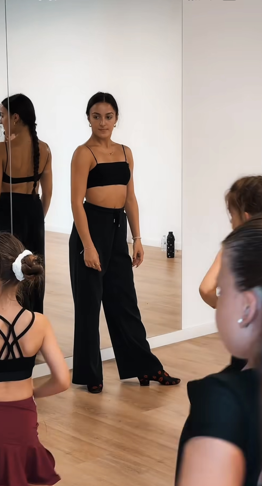

Latin American
Private Latin tuition from complete beginner through to competitive level.
Lessons can cover technique, movement, musicality, choreography, presentation and performance across the Latin American dances.
Private Coaching
Private Ballroom and Latin tuition in Woodley, Reading for children and adults.
Everyone Starts Somewhere
You don't need any previous dance experience to start.
Lessons are completely individual and designed around what you want to achieve, whether that's learning for enjoyment, building confidence, improving your technique or preparing for competition.
Private Latin tuition from complete beginner through to competitive level.
Lessons can cover technique, movement, musicality, choreography, presentation and performance across the Latin American dances.
Private Ballroom tuition for complete beginners looking to discover the fundamentals of Ballroom dancing.
Suitable for individuals or couples wanting to learn in a relaxed and supportive environment.
Individual coaching designed to help young dancers develop confidence, coordination, musicality and strong foundations.
Lessons are suitable for children dancing recreationally as well as those who would like to progress towards competition.
Focused coaching for competitive Latin dancers looking to develop their dancing further.
Training can include technical development, choreography, musicality, presentation, performance quality and competition preparation.

One-to-One Attention
Private lessons allow the coaching to move at your pace and focus on exactly what you need.
Some students come to learn a new skill and enjoy dancing. Others want detailed technical development or competitive preparation. Both are equally welcome.
Never Danced Before?
Having an international competitive background doesn't mean lessons are only for experienced dancers.
Complete beginners are very welcome, and lessons can start right from the basics in a relaxed and encouraging environment.
Enquire About Your First Lesson